成員介紹-SVT
loading...
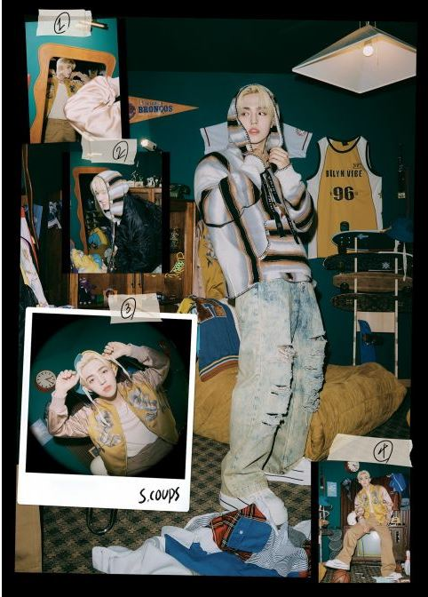
藝名/英文名:S.COUPS
姓名：崔勝哲 生日：1995年8月8日 身高：179cm 體重：67kg 血型：AB型 星座：獅子座 國籍：韓國 出生地：大邱 家庭：父母、哥哥 學歷：首爾公演藝術高中 隊內擔當：隊長、領Rapper 分隊：Hip-hop Team 隊長
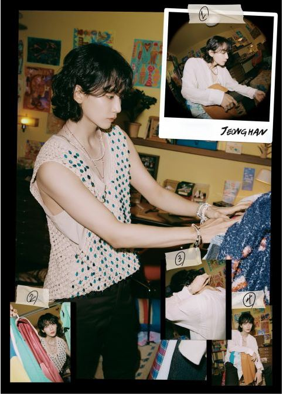
藝名/英文名:Jeonghan
姓名：尹淨漢 生日：1995年10月4日 身高：178cm 體重：61kg 血型：B型 星座：天秤座 國籍：韓國 出生地：首爾 家庭：父母、妹妹 學歷：鄉南高中 隊內擔當：副主唱、門面擔當 分隊：Vocal Team
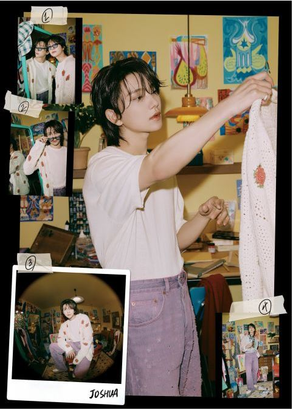
藝名/英文名:Joshua
姓名：洪知秀 生日：1995年12月30日 身高：178cm 體重：60kg 血型：A型 星座：摩羯座 國籍：美國 出生地：洛杉磯 家庭：父母 學歷：Downtown Magnets High School 隊內擔當：副主唱、門面擔當 分隊：Vocal Team
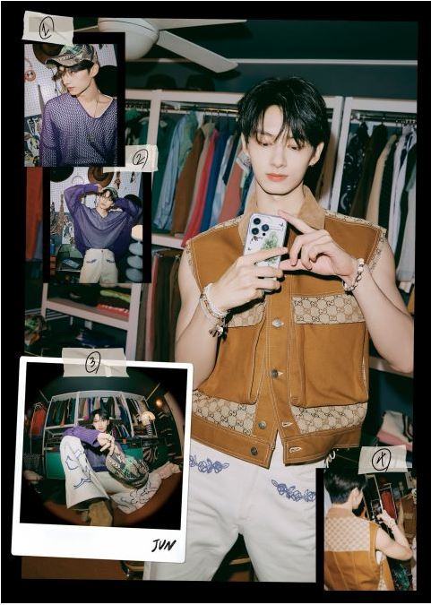
藝名/英文名:Jun
姓名：文俊輝 生日：1996年6月10日 身高：181cm 體重：66kg 血型：B型 星座：雙子座 國籍：中國 出生地：廣東深圳 家庭：父母、弟弟 學歷：世宗大學 隊內擔當：領舞、副唱 分隊：Performance Team
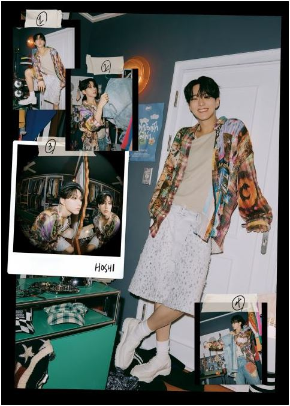
藝名/英文名:Hoish
姓名：權順榮 生日：1996年6月15日 身高：177cm 體重：61kg 血型：B型 星座：雙子座 國籍：韓國 出生地：京畿道 南楊州市 家庭：父母、姊姊 學歷：東亞放送藝術大學 放送演藝學系 隊內擔當：主領舞、副唱、編舞 分隊：Performance Team隊長
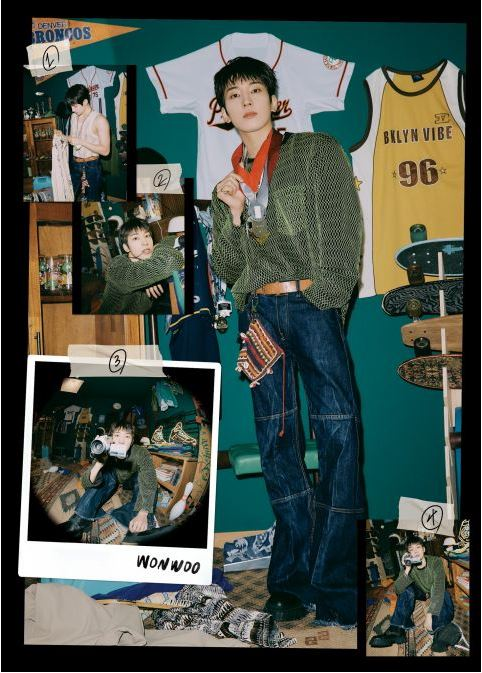
藝名/英文名:Wonwoo
姓名：全圓佑 生日：1996年7月17日 身高：182cm 體重：64kg 血型：A型 星座：巨蟹座 國籍：韓國 出生地：京畿南道 昌原市 家庭：父母、弟弟 學歷：首爾公演藝術高中 隊內擔當：副Rapper 分隊：Hip-hop Team
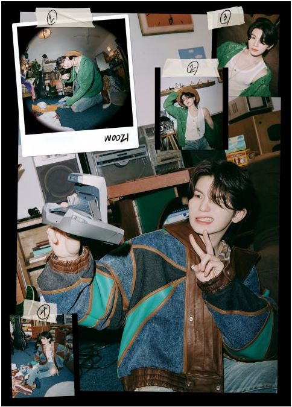
藝名/英文名:Woozi
姓名：李知勳 生日：1996年11月22日 身高：166cm 體重：53kg 血型：A型 星座：天蠍座 國籍：韓國 出生地：釜山 家庭：父母 學歷：翰林演藝藝術高中 隊內擔當：領唱、作曲、編曲、填詞、製作人 分隊：Vocal Team 隊長
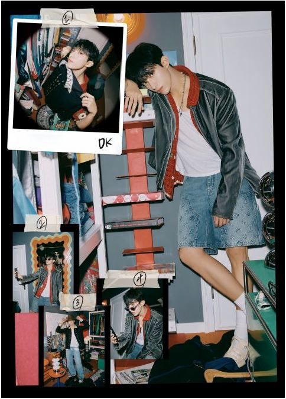
藝名/英文名:DK
姓名：李碩珉 生日：1997年2月18日 身高：179cm 體重：66kg 血型：RH-O型 星座：水瓶座 國籍：韓國 出生地：首爾 家庭：父母、姊姊 學歷：首爾公演藝術高中 隊內擔當：主唱 分隊：Vocal Team
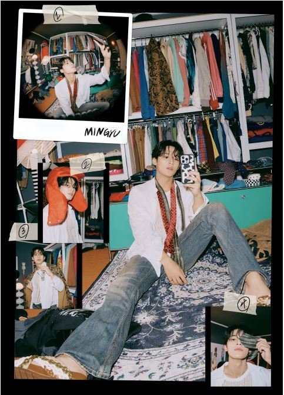
藝名/英文名:Mingyu
姓名：金珉奎 生日：1997年4月6日 身高：187cm 體重：70kg 血型：B型 星座：牡羊座 國籍：韓國 出生地：京畿道 安養市 家庭：父母、妹妹 學歷：首爾放送高中 隊內擔當：副Rapper、門面擔當 分隊：Hip-hop Team
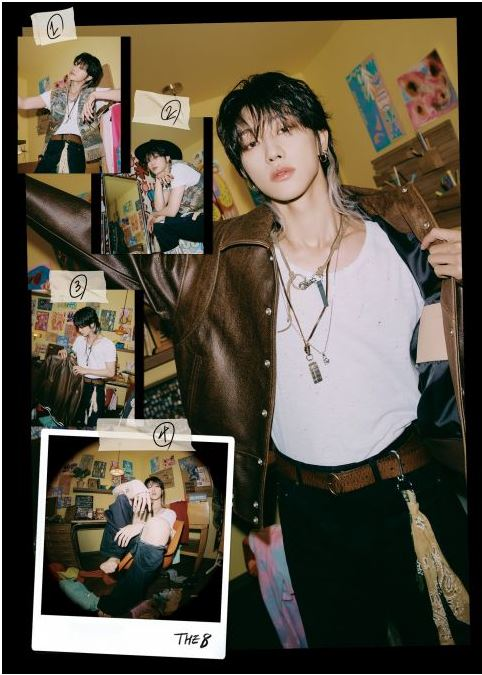
藝名/英文名:The8
姓名：徐明浩 生日：1997年11月07日 身高：180cm 體重：54kg 血型：O型 星座：天蠍座 國籍：中國 出生地：遼寧省 鞍山市 家庭：父母 學歷：北京現代音樂學院 現代歌舞系 隊內擔當：領舞、副唱 分隊：Performance Team
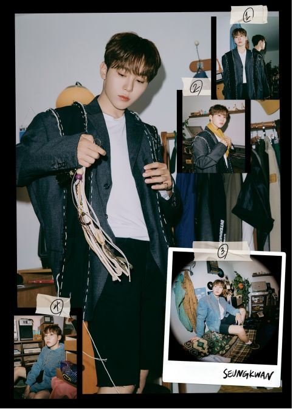
藝名/英文名:Seungkwan
姓名：夫勝寛 生日：1998年1月16日 身高：175cm 體重：61kg 血型：B型 星座：摩羯座 國籍：韓國 出生地：濟州島 家庭：父母、兩個姊姊 學歷：首爾放送高中 隊內擔當：主唱 分隊：Vocal Team
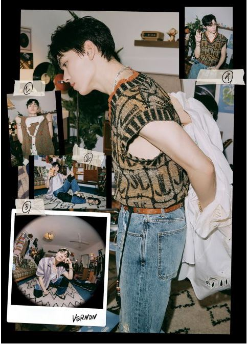
藝名/英文名:Vernon
姓名：崔韓率 生日：1998年2月18日 身高：178cm 體重：65kg 血型：A型 星座：水瓶座 國籍：韓國、美國 出生地：紐約 家庭：父母、妹妹 學歷：梨花女子大學附設中學 隊內擔當：主Rapper 分隊：Hip-hop Team
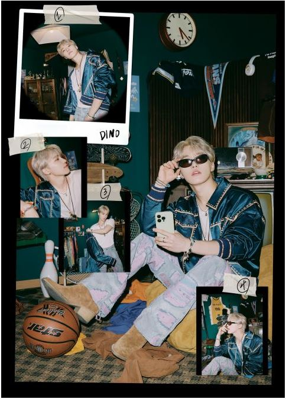
藝名/英文名:Dino
姓名：李燦 生日：1999年2月11日 身高：173cm 體重：56kg 血型：A型 星座：水瓶座 國籍：韓國 出生地：全羅北道 益山市 家庭：父母、弟弟 學歷：首爾放送高中 隊內擔當：主領舞、副Rapper、副唱、忙內 分隊：Performance Team